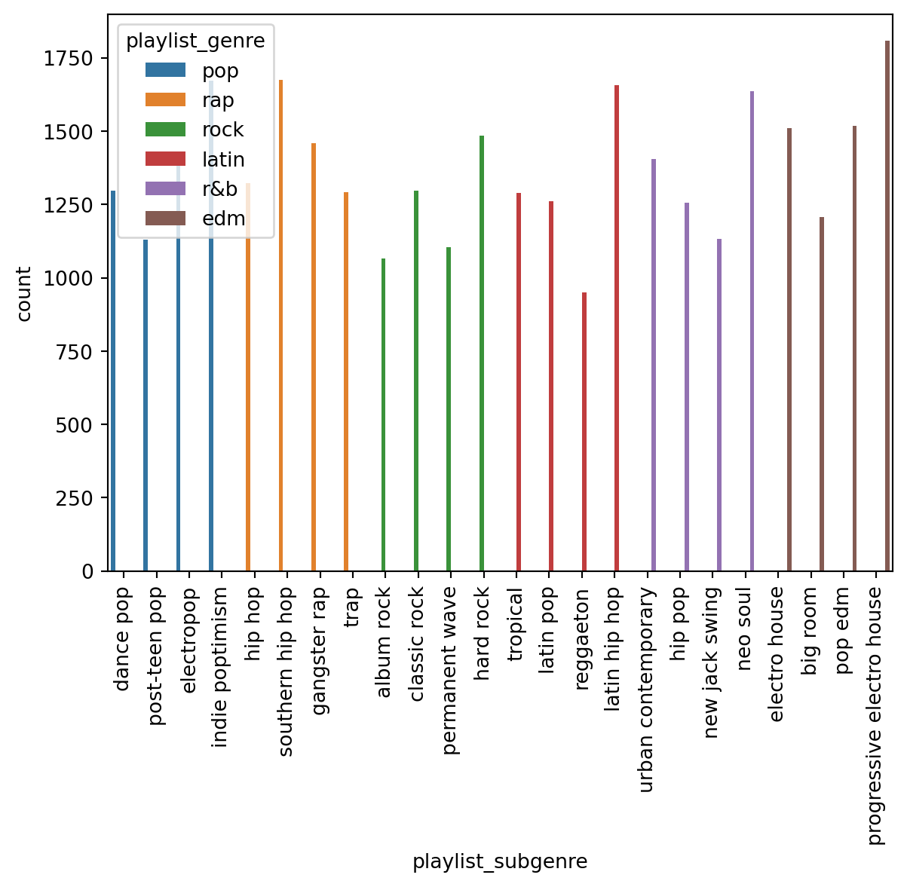
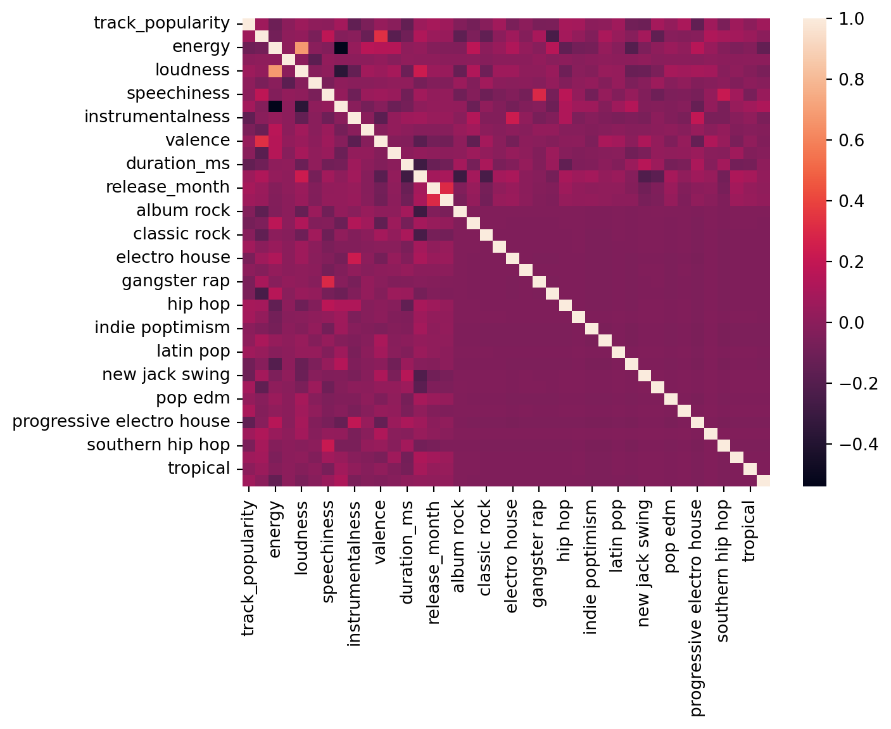

import numpy as np
import seaborn as sns
import pandas as pd
from sklearn import preprocessing
import matplotlib.pyplot as plt
from sklearn.model_selection import train_test_split
from sklearn.model_selection import RandomizedSearchCV
from sklearn.ensemble import (
AdaBoostRegressor,
RandomForestRegressor,
GradientBoostingRegressor,
BaggingRegressor,
ExtraTreesRegressor,
)
from sklearn.neighbors import KNeighborsRegressor
from sklearn.neighbors import RadiusNeighborsRegressor
from sklearn import svm
from sklearn.metrics import mean_squared_errorSong popularity prediction
Regression
Linear and non linear regration
Introduction
Dataset
In this blog post I’ll try to explore linear and nonlinear regression ML algorithms to predict popularity of a song based on a data set of almost 30,000 songs from Spotify API collected using the spotifyr package. The package and orgnial data set can be found here.
Description of dataset
This dataset encompasses various attributes providing diverse information about songs, artists, popularity, musical features, and playlist characteristics, making it suitable for music-related analyses or applications in data analysis and machine learning.
- Track_id: Unique ID for a song
- Track_name: Name of the song
- Track_artist: Artist of the song
- Track_popularity: Song popularity rating (0-100)
- Track_album_id: Unique ID for the album
- Track_album_name: Name of the album
- Track_album_release_date: Release date of the album
- Playlist_name: Name of the playlist
- Playlist_id: ID of the playlist
- Playlist_genre: Genre of the playlist
- Playlist_subgenre: Subgenre of the playlist
- Danceability: Describes how suitable a track is for dancing (0.0 to 1.0)
- Energy: Represents intensity and activity of the track (0.0 to 1.0)
- Key: Estimated overall key of the track
- Loudness: Overall loudness of a track in decibels (dB)
- Mode: Indicates the modality (major or minor) of a track (0 for minor, 1 for major)
- Speechiness: Detects the presence of spoken words in a track (0.0 to 1.0)
- Acousticness: Confidence measure of whether the track is acoustic (0.0 to 1.0)
- Instrumentalness: Predicts whether a track contains no vocals (0.0 to 1.0)
- Liveness: Detects the presence of an audience in the recording
- Valence: Describes the musical positiveness conveyed by a track (0.0 to 1.0)
- Tempo: Estimated tempo of a track in beats per minute (BPM)
- Duration_ms: Duration of the song in milliseconds
Task
The task for this blog post is to train a couple of regression models and predict how pouplar a song is given the other features about the song.
# Preprocessing ## Imports
Load the data
songs = pd.read_csv("../data/spotify_songs.csv")
songs.head()| track_id | track_name | track_artist | track_popularity | track_album_id | track_album_name | track_album_release_date | playlist_name | playlist_id | playlist_genre | ... | key | loudness | mode | speechiness | acousticness | instrumentalness | liveness | valence | tempo | duration_ms | |
|---|---|---|---|---|---|---|---|---|---|---|---|---|---|---|---|---|---|---|---|---|---|
| 0 | 6f807x0ima9a1j3VPbc7VN | I Don't Care (with Justin Bieber) - Loud Luxur... | Ed Sheeran | 66 | 2oCs0DGTsRO98Gh5ZSl2Cx | I Don't Care (with Justin Bieber) [Loud Luxury... | 2019-06-14 | Pop Remix | 37i9dQZF1DXcZDD7cfEKhW | pop | ... | 6 | -2.634 | 1 | 0.0583 | 0.1020 | 0.000000 | 0.0653 | 0.518 | 122.036 | 194754 |
| 1 | 0r7CVbZTWZgbTCYdfa2P31 | Memories - Dillon Francis Remix | Maroon 5 | 67 | 63rPSO264uRjW1X5E6cWv6 | Memories (Dillon Francis Remix) | 2019-12-13 | Pop Remix | 37i9dQZF1DXcZDD7cfEKhW | pop | ... | 11 | -4.969 | 1 | 0.0373 | 0.0724 | 0.004210 | 0.3570 | 0.693 | 99.972 | 162600 |
| 2 | 1z1Hg7Vb0AhHDiEmnDE79l | All the Time - Don Diablo Remix | Zara Larsson | 70 | 1HoSmj2eLcsrR0vE9gThr4 | All the Time (Don Diablo Remix) | 2019-07-05 | Pop Remix | 37i9dQZF1DXcZDD7cfEKhW | pop | ... | 1 | -3.432 | 0 | 0.0742 | 0.0794 | 0.000023 | 0.1100 | 0.613 | 124.008 | 176616 |
| 3 | 75FpbthrwQmzHlBJLuGdC7 | Call You Mine - Keanu Silva Remix | The Chainsmokers | 60 | 1nqYsOef1yKKuGOVchbsk6 | Call You Mine - The Remixes | 2019-07-19 | Pop Remix | 37i9dQZF1DXcZDD7cfEKhW | pop | ... | 7 | -3.778 | 1 | 0.1020 | 0.0287 | 0.000009 | 0.2040 | 0.277 | 121.956 | 169093 |
| 4 | 1e8PAfcKUYoKkxPhrHqw4x | Someone You Loved - Future Humans Remix | Lewis Capaldi | 69 | 7m7vv9wlQ4i0LFuJiE2zsQ | Someone You Loved (Future Humans Remix) | 2019-03-05 | Pop Remix | 37i9dQZF1DXcZDD7cfEKhW | pop | ... | 1 | -4.672 | 1 | 0.0359 | 0.0803 | 0.000000 | 0.0833 | 0.725 | 123.976 | 189052 |
5 rows × 23 columns
Remove identifiers
Features like track_id, track_name, track_artist, track_album_id, track_album_name, playlist_id,playlist_name will have little contribution to our model as they are unique identifiers. Hence we’ll remove them from the data.
songs = songs.drop(
[
"track_id",
"track_name",
"track_artist",
"track_album_id",
"track_album_name",
"playlist_id",
"playlist_name",
],
axis="columns",
)
songs.head()| track_popularity | track_album_release_date | playlist_genre | playlist_subgenre | danceability | energy | key | loudness | mode | speechiness | acousticness | instrumentalness | liveness | valence | tempo | duration_ms | |
|---|---|---|---|---|---|---|---|---|---|---|---|---|---|---|---|---|
| 0 | 66 | 2019-06-14 | pop | dance pop | 0.748 | 0.916 | 6 | -2.634 | 1 | 0.0583 | 0.1020 | 0.000000 | 0.0653 | 0.518 | 122.036 | 194754 |
| 1 | 67 | 2019-12-13 | pop | dance pop | 0.726 | 0.815 | 11 | -4.969 | 1 | 0.0373 | 0.0724 | 0.004210 | 0.3570 | 0.693 | 99.972 | 162600 |
| 2 | 70 | 2019-07-05 | pop | dance pop | 0.675 | 0.931 | 1 | -3.432 | 0 | 0.0742 | 0.0794 | 0.000023 | 0.1100 | 0.613 | 124.008 | 176616 |
| 3 | 60 | 2019-07-19 | pop | dance pop | 0.718 | 0.930 | 7 | -3.778 | 1 | 0.1020 | 0.0287 | 0.000009 | 0.2040 | 0.277 | 121.956 | 169093 |
| 4 | 69 | 2019-03-05 | pop | dance pop | 0.650 | 0.833 | 1 | -4.672 | 1 | 0.0359 | 0.0803 | 0.000000 | 0.0833 | 0.725 | 123.976 | 189052 |
Date Data
To capture seasonal popularity I’ll split the date value into three columns with year, month and day values. We first convert the string representation of track_album_release_date to date datatype and takeout the individual values separately.
songs["track_album_release_date"] = pd.to_datetime(
songs["track_album_release_date"], format="%Y-%m-%d", errors="coerce"
)
songs["release_year"] = songs["track_album_release_date"].dt.year
songs["release_month"] = songs["track_album_release_date"].dt.month
songs["release_day"] = songs["track_album_release_date"].dt.day
songs = songs.drop(["track_album_release_date"], axis="columns")Missing values
Let’s check if there are any missing values in our dataset
songs.isnull().values.any()TrueIt seems we’ve some
songs.isnull().sum()track_popularity 0
playlist_genre 0
playlist_subgenre 0
danceability 0
energy 0
key 0
loudness 0
mode 0
speechiness 0
acousticness 0
instrumentalness 0
liveness 0
valence 0
tempo 0
duration_ms 0
release_year 1886
release_month 1886
release_day 1886
dtype: int64Given the missing date values are arround 17% our data simply dropping the rows does not yeild an ideal outcome. Hence, let’s to fill the missing columns with the most common value in that feature
songs["release_year"].fillna(
songs["release_year"].value_counts().index[0], inplace=True
)
songs["release_month"].fillna(
songs["release_month"].value_counts().index[0], inplace=True
)
songs["release_day"].fillna(songs["release_day"].value_counts().index[0], inplace=True)
songs| track_popularity | playlist_genre | playlist_subgenre | danceability | energy | key | loudness | mode | speechiness | acousticness | instrumentalness | liveness | valence | tempo | duration_ms | release_year | release_month | release_day | |
|---|---|---|---|---|---|---|---|---|---|---|---|---|---|---|---|---|---|---|
| 0 | 66 | pop | dance pop | 0.748 | 0.916 | 6 | -2.634 | 1 | 0.0583 | 0.102000 | 0.000000 | 0.0653 | 0.5180 | 122.036 | 194754 | 2019.0 | 6.0 | 14.0 |
| 1 | 67 | pop | dance pop | 0.726 | 0.815 | 11 | -4.969 | 1 | 0.0373 | 0.072400 | 0.004210 | 0.3570 | 0.6930 | 99.972 | 162600 | 2019.0 | 12.0 | 13.0 |
| 2 | 70 | pop | dance pop | 0.675 | 0.931 | 1 | -3.432 | 0 | 0.0742 | 0.079400 | 0.000023 | 0.1100 | 0.6130 | 124.008 | 176616 | 2019.0 | 7.0 | 5.0 |
| 3 | 60 | pop | dance pop | 0.718 | 0.930 | 7 | -3.778 | 1 | 0.1020 | 0.028700 | 0.000009 | 0.2040 | 0.2770 | 121.956 | 169093 | 2019.0 | 7.0 | 19.0 |
| 4 | 69 | pop | dance pop | 0.650 | 0.833 | 1 | -4.672 | 1 | 0.0359 | 0.080300 | 0.000000 | 0.0833 | 0.7250 | 123.976 | 189052 | 2019.0 | 3.0 | 5.0 |
| ... | ... | ... | ... | ... | ... | ... | ... | ... | ... | ... | ... | ... | ... | ... | ... | ... | ... | ... |
| 32828 | 42 | edm | progressive electro house | 0.428 | 0.922 | 2 | -1.814 | 1 | 0.0936 | 0.076600 | 0.000000 | 0.0668 | 0.2100 | 128.170 | 204375 | 2014.0 | 4.0 | 28.0 |
| 32829 | 20 | edm | progressive electro house | 0.522 | 0.786 | 0 | -4.462 | 1 | 0.0420 | 0.001710 | 0.004270 | 0.3750 | 0.4000 | 128.041 | 353120 | 2013.0 | 3.0 | 8.0 |
| 32830 | 14 | edm | progressive electro house | 0.529 | 0.821 | 6 | -4.899 | 0 | 0.0481 | 0.108000 | 0.000001 | 0.1500 | 0.4360 | 127.989 | 210112 | 2014.0 | 4.0 | 21.0 |
| 32831 | 15 | edm | progressive electro house | 0.626 | 0.888 | 2 | -3.361 | 1 | 0.1090 | 0.007920 | 0.127000 | 0.3430 | 0.3080 | 128.008 | 367432 | 2014.0 | 1.0 | 1.0 |
| 32832 | 27 | edm | progressive electro house | 0.603 | 0.884 | 5 | -4.571 | 0 | 0.0385 | 0.000133 | 0.341000 | 0.7420 | 0.0894 | 127.984 | 337500 | 2014.0 | 3.0 | 3.0 |
32833 rows × 18 columns
If we check once more, we see there are no missing values anymore
songs.isnull().values.any()FalseVisualization
Let’s visualize the data and get a better understanding of the values ### Genre
sns.countplot(songs, x="playlist_subgenre", hue="playlist_genre")
plt.xticks(rotation=90)(array([ 0, 1, 2, 3, 4, 5, 6, 7, 8, 9, 10, 11, 12, 13, 14, 15, 16,
17, 18, 19, 20, 21, 22, 23]),
[Text(0, 0, 'dance pop'),
Text(1, 0, 'post-teen pop'),
Text(2, 0, 'electropop'),
Text(3, 0, 'indie poptimism'),
Text(4, 0, 'hip hop'),
Text(5, 0, 'southern hip hop'),
Text(6, 0, 'gangster rap'),
Text(7, 0, 'trap'),
Text(8, 0, 'album rock'),
Text(9, 0, 'classic rock'),
Text(10, 0, 'permanent wave'),
Text(11, 0, 'hard rock'),
Text(12, 0, 'tropical'),
Text(13, 0, 'latin pop'),
Text(14, 0, 'reggaeton'),
Text(15, 0, 'latin hip hop'),
Text(16, 0, 'urban contemporary'),
Text(17, 0, 'hip pop'),
Text(18, 0, 'new jack swing'),
Text(19, 0, 'neo soul'),
Text(20, 0, 'electro house'),
Text(21, 0, 'big room'),
Text(22, 0, 'pop edm'),
Text(23, 0, 'progressive electro house')])
From this we can see playlist_subgenre is full contained in playlist_genre hence we can remote the playlist_genre as the playlist_subgenre has more fine grained information
songs = songs.drop("playlist_genre", axis="columns")One hot encoding
Notice how we have a categorical feature (i.e., playlist_subgenre), we need to one-hot encode this column.
playlist_subgenre = pd.get_dummies(songs["playlist_subgenre"])
songs = pd.concat([songs, playlist_subgenre], axis="columns")
songs = songs.drop("playlist_subgenre", axis="columns")
songs| track_popularity | danceability | energy | key | loudness | mode | speechiness | acousticness | instrumentalness | liveness | ... | new jack swing | permanent wave | pop edm | post-teen pop | progressive electro house | reggaeton | southern hip hop | trap | tropical | urban contemporary | |
|---|---|---|---|---|---|---|---|---|---|---|---|---|---|---|---|---|---|---|---|---|---|
| 0 | 66 | 0.748 | 0.916 | 6 | -2.634 | 1 | 0.0583 | 0.102000 | 0.000000 | 0.0653 | ... | False | False | False | False | False | False | False | False | False | False |
| 1 | 67 | 0.726 | 0.815 | 11 | -4.969 | 1 | 0.0373 | 0.072400 | 0.004210 | 0.3570 | ... | False | False | False | False | False | False | False | False | False | False |
| 2 | 70 | 0.675 | 0.931 | 1 | -3.432 | 0 | 0.0742 | 0.079400 | 0.000023 | 0.1100 | ... | False | False | False | False | False | False | False | False | False | False |
| 3 | 60 | 0.718 | 0.930 | 7 | -3.778 | 1 | 0.1020 | 0.028700 | 0.000009 | 0.2040 | ... | False | False | False | False | False | False | False | False | False | False |
| 4 | 69 | 0.650 | 0.833 | 1 | -4.672 | 1 | 0.0359 | 0.080300 | 0.000000 | 0.0833 | ... | False | False | False | False | False | False | False | False | False | False |
| ... | ... | ... | ... | ... | ... | ... | ... | ... | ... | ... | ... | ... | ... | ... | ... | ... | ... | ... | ... | ... | ... |
| 32828 | 42 | 0.428 | 0.922 | 2 | -1.814 | 1 | 0.0936 | 0.076600 | 0.000000 | 0.0668 | ... | False | False | False | False | True | False | False | False | False | False |
| 32829 | 20 | 0.522 | 0.786 | 0 | -4.462 | 1 | 0.0420 | 0.001710 | 0.004270 | 0.3750 | ... | False | False | False | False | True | False | False | False | False | False |
| 32830 | 14 | 0.529 | 0.821 | 6 | -4.899 | 0 | 0.0481 | 0.108000 | 0.000001 | 0.1500 | ... | False | False | False | False | True | False | False | False | False | False |
| 32831 | 15 | 0.626 | 0.888 | 2 | -3.361 | 1 | 0.1090 | 0.007920 | 0.127000 | 0.3430 | ... | False | False | False | False | True | False | False | False | False | False |
| 32832 | 27 | 0.603 | 0.884 | 5 | -4.571 | 0 | 0.0385 | 0.000133 | 0.341000 | 0.7420 | ... | False | False | False | False | True | False | False | False | False | False |
32833 rows × 40 columns
Correlation
cor = songs.corr()
sns.heatmap(cor)
cor = cor.abs()
Let’s see the top 5 correclations
cor_values = (
cor.where(np.triu(np.ones(cor.shape), k=1).astype(bool))
.stack()
.sort_values(ascending=False)
)
top_n = 5
print("Top 5 correlation values are")
for i, v in cor_values[:top_n].items():
print("{} - {} ".format(i, v))Top 5 correlation values are
('energy', 'loudness') - 0.6766245234442312
('energy', 'acousticness') - 0.5397446301909388
('loudness', 'acousticness') - 0.36163816507093
('danceability', 'valence') - 0.3305232570910807
('release_month', 'release_day') - 0.3080926045288983 As expected ‘energy’, ‘loudness’ are correlated to a degree but none of these correlation values are significantly high enought to warrant removal befor the training so we keep all our features.
Target and Data
Let’s now split features into X and Y with the later being our target for prediction
y = songs["track_popularity"].to_numpy()
x = songs.drop("track_popularity", axis="columns").to_numpy()Normalization
Normalize the features to bring them all to 0-1 range
x_normalized = preprocessing.normalize(x)Training and Test Split and Data
Let’s split our data into training and test sets with 80 to 20 ratio.
x_train, x_test, y_train, y_test = train_test_split(x_normalized, y, test_size=0.20)
print("Training X Shape: {}".format(x_train.shape))
print("Training Y Shape: {}".format(y_train.shape))
print("Test X Shape: {}".format(x_test.shape))
print("Test y Shape: {}".format(y_test.shape))Training X Shape: (26266, 39)
Training Y Shape: (26266,)
Test X Shape: (6567, 39)
Test y Shape: (6567,)Training and Optimization
Regression models
We will try to train on multiple algorithms and perform hyperparamter tuining on each to find the best performing model
models = {
"ExtraTreesRegressor": {
"model": ExtraTreesRegressor(),
"params": {
"n_estimators": [25, 50, 75, 100],
"max_depth": [5, 10, 20],
"min_samples_split": [3, 5, 7],
"min_samples_leaf": [3, 4, 5],
},
},
"adaboost": {
"model": AdaBoostRegressor(),
"params": {
"n_estimators": [25, 50, 75, 100],
"loss": ["linear", "square", "exponential"],
},
},
"svm": {
"model": svm.SVR(),
"params": {
"degree": [2, 4, 6],
"C": [0.5, 1.0, 1.5],
},
},
"knr": {
"model": KNeighborsRegressor(),
"params": {
"n_neighbors": [3, 5, 8],
"weights": ["uniform", "distance"],
"leaf_size": [20, 40, 60],
},
},
"rnr": {
"model": RadiusNeighborsRegressor(),
"params": {
"radius": [0.5, 1.0, 1.5],
"weights": ["uniform", "distance"],
"leaf_size": [20, 40, 60],
},
},
"RandomForestRegressor": {
"model": RandomForestRegressor(),
"params": {
"n_estimators": [25, 50, 75, 100],
"max_depth": [5, 10, 20],
"min_samples_split": [3, 5, 7],
"min_samples_leaf": [3, 4, 5],
},
},
"boosting": {
"model": GradientBoostingRegressor(),
"params": {
"n_estimators": [25, 50, 75, 100],
"loss": ["linear", "square", "exponential"],
"min_samples_split": [3, 5, 7],
},
},
}Now let’s peform the training and hyperparamter tuining. Start by preparing a variable to store the best model and it’s param values in
best_model, best_params, best_performance = None, None, float("inf")Loop through each model and perform randomized search. Note: Running the following code takes a lot of time so what I did was run it on google colab and bring the results here.
for name, info in models.items():
random_search = RandomizedSearchCV(
info["model"],
info["params"],
scoring="neg_mean_squared_error",
cv=5,
n_jobs=-1,
)
random_search.fit(x_train, y_train)
# Get the best model and its parameters
winning_model = random_search.best_estimator_
winning_model_params = random_search.best_params_
# Check the performance of the best model using the test data.
# We need to round the predicted values because the target feature is integer
y_pred = np.round(winning_model.predict(x_test))
error = mean_squared_error(y_test, y_pred)
# Update the best_model_info if the current model has lower MSE
if error < best_performance:
best_performance = error
best_model = winning_model
best_params = winning_model_params
# Print the best model information
print(f"Best Model: {best_model}")
print(f"Best Parameters: {best_params}")Conclusion
I found the best berformance in terms of mean absolut error comes from AdaBoostRegressor with the follwoing details
Best Model
Best Model: AdaBoostRegressor(n_estimators=75)
Best Parameters: {‘n_estimators’: 75, ‘loss’: ‘linear’}
Lowest Mean Squared Error: 591.7667123496269
Other sample runs are as follows
KNeighborsRegressor
- Model: KNeighborsRegressor(leaf_size=20, n_neighbors=8)
- Parameters: {‘n_neighbors’: 8, ‘leaf_size’: 20}
- Mean Squared Error: 619.6920968478757
RadiusNeighborsRegressor
- Model: RadiusNeighborsRegressor(leaf_size=40, radius=0.5, weights=‘distance’)
- Parameters: {‘weights’: ‘distance’, ‘radius’: 0.5, ‘leaf_size’: 40}
- Mean Squared Error: 615.0418760469012